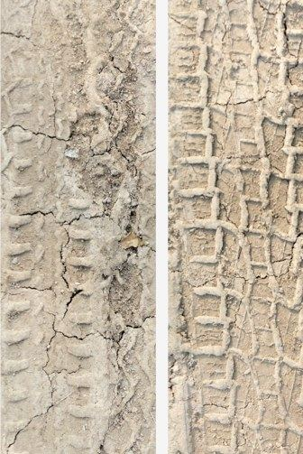
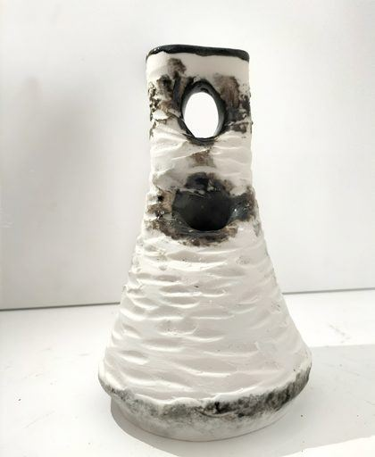
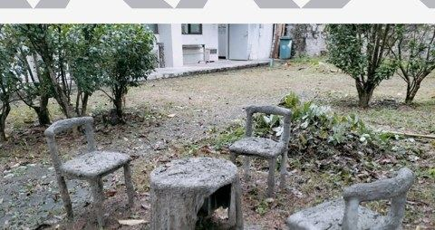

背景
本科读公共艺术，陶艺是必修也是偏爱。在工作室做了一年陶艺师， 每天面对的是同一台拉坯机、同一批泥、同一个窑。
陶艺有一个很诚实的特性：所有步骤都无法跳过。 拉坯时手抖一下，修坯时多削一刀，施釉时厚了一点，烧出来就是另一个东西。 这种「不可撤销」让我第一次真正理解材料——它不服从想法，只服从手法。
一年里我完成了从设计、拉坯、修坯、施釉到烧制的全流程独立制作， 也结合流行趋势设计了原创陶艺摆件与日用器皿，完成样品打样； 同时协助企业策划小型商业性陶艺娱乐活动，并承担陶艺课程教学。
这三组作品不是课程作业，更像是持续一年的自我训练： 每做完一个「正确的」器皿，就想破坏它一次。 于是有了种在釉里的绣球、被敲出通道的罐， 以及一组让人坐不住的椅子。
它们后来成了我理解「体验设计」的起点—— 一件物品能不能让人产生反应，往往取决于它有没有在某处「不对劲」。
问题
器物天生是被使用的：它安静、服从、可预期。这三组练习， 分别从釉色、破坏、痕迹与材料四个方向去追问同一件事—— 它还能不能是别的？
同一个坯，能烧出多少种表面
素坯完全一样，只改变施釉方式与窑位，结果几乎没有重复——造型在这里只是给釉提供地形。
完美的器物，为什么想破坏
拉出一个光滑完整的罐子，第一反应却是敲开它。这个冲动本身值得被记录成作品。
痕迹能不能不经过手，自己成为作品
牛田洋泥地上一深一浅的车轮印，是时间，也是劳作的证据。纸只是把这件事固定下来。
材质能不能制造不适
家具本为舒适而生。把水泥浇在椅子上，放松的动作立刻变成一种勉强。
理念
这三组作品的共同方法，是把「不满意」当成材料： 对颜色不满意，就反复试釉；对太完整不满意，就敲开它； 对只能靠手不满意，就让车轮来画。
陶艺有一个很诚实的特性：所有步骤都无法跳过。拉坯时手抖一下，修坯时多削一刀， 施釉时厚了一点，烧出来就是另一个东西。这种「不可撤销」让人无法靠想象工作， 只能一次次回到手上。
所以这三组作品本质上都是过程记录：绣球记录釉在窑里的流动， 通道记录破坏的瞬间，割裂记录某种身体的不适。 成品只是这些过程的残留物。
系列
三组作品，三种「不对劲」的方式。有的靠釉色生长，有的靠破坏开口，有的让材料本身变得不舒服。
01 · 绣球
媒介：瓷泥。在绣球花造型的基础上，对釉料做浅显探索。 同一个素坯，用不同的施釉方式与窑位，烧出完全不同的表面。 这一组的意义几乎全部在釉上——造型只是给釉提供一个可以流淌的地形。
02 · 通道
媒介：瓷泥。灵感来自拉坯的过程：我们通过技巧制作出一个完整的罐子， 器形圆满、表面光滑、没有任何瑕疵——但它越完整，就越像一件「完成的工业品」， 而不是一个还在呼吸的东西。
面对这光滑的器物，总会有一种想破坏掉的冲动。这个冲动不只来自逆反心理， 更来自对作品本身的不满意：它太顺了，顺到没有话可说。
因此在探索美感的同时去破坏它——沿着罐壁敲出一个开口，让「里面」暴露出来， 让光进去、让视线穿过。破坏发生在半干阶段，早一分会塌、晚一分会裂， 罐中于是形成一条天然的通道。破坏不是逆反，是对「太完整」的不满。
这一组最终留下的是开口的形状而不是罐子的轮廓： 人们记住的往往不是它原来多完整，而是它从哪里被打开。



03 · 割裂
家具一般是让人舒适而设计出来的，因此放入舒适的空间才不会有违和感。 而利用不加修饰的粗糙水泥家具与精致的空间进行对比，形成一个矛盾的场景， 使人对家具处于室内空间的认知产生割裂感。
草图阶段试过把椅子放进真实的客厅，结果过于安静、几乎没有冲突； 最后选择放在半户外的草地与庭院交界处——介于「室内」与「室外」之间的暧昧， 才让这组家具真正显得不合时宜。
产出
作品集《Personal Portfolio 2024》共 20 页，收录本科阶段七组创作。 从拉坯到烧制、从建模到现场，全部环节由我独立完成。
全流程独立制作
设计、拉坯、修坯、施釉、烧制，不依赖他人完成任何环节
6 组系列作品
覆盖陶艺、装置、公共艺术提案与行为记录四种类型
陶艺课程教学
协助企业策划商业性陶艺活动，并承担陶艺课程教学
这段经历给我留下了什么。
做陶让我对「完成度」有了新的判断：不是把所有细节磨平， 而是知道哪里该停手。这一点后来在做方案时同样适用—— 一个节点讲清楚一件事就够了，塞满了反而没人记得住。
它和文旅项目的关系。
竹海项目里那些竹编小样、印章的刻痕、茶席的器物， 用的其实是同一种手感。会做东西的人，在提方案时会更知道什么能落地。
成果
三组系列作品
绣球（釉料）× 通道（破坏）× 割裂（装置）
全流程独立制作
陶艺部分覆盖设计、拉坯、修坯、施釉、烧制全部环节
收录于个人作品集
《Personal Portfolio 2024》第 10—33 页